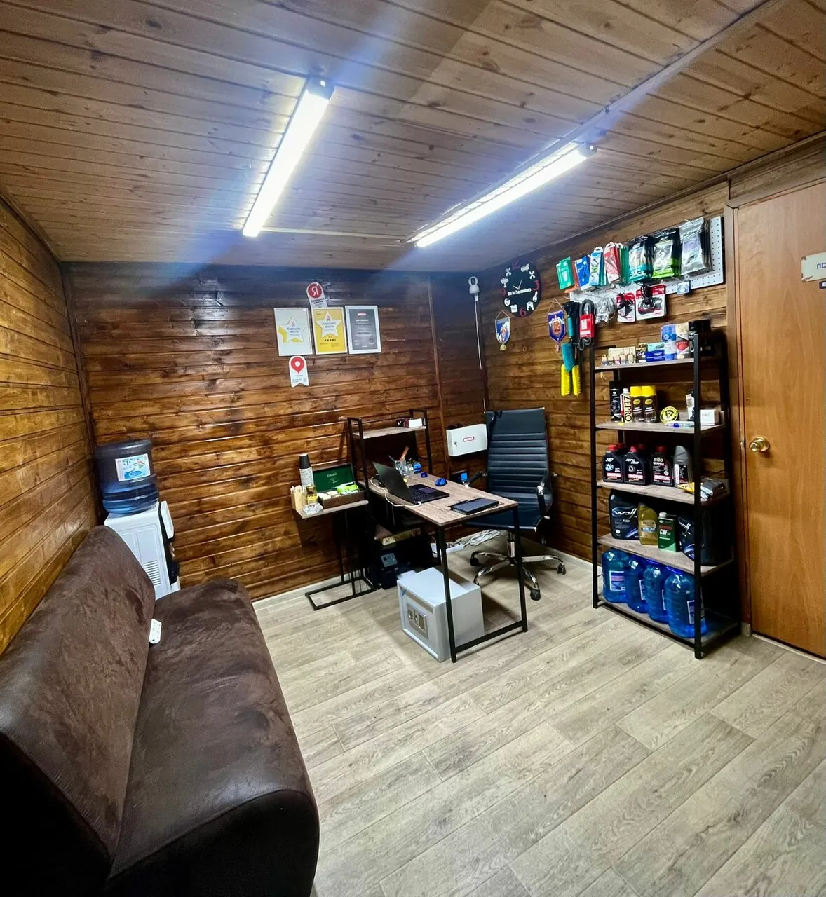
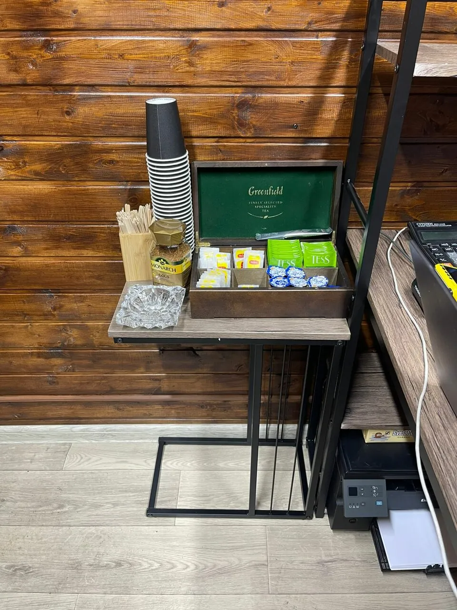
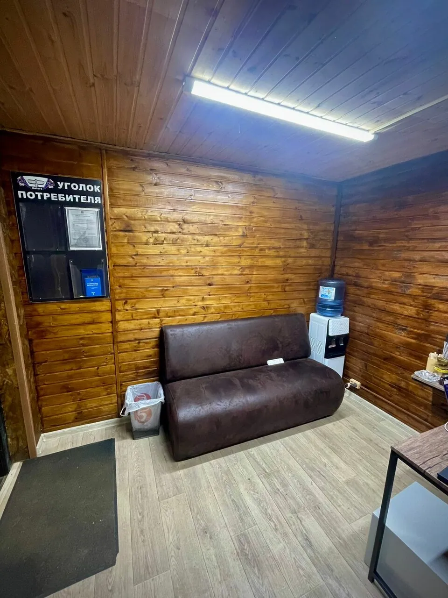
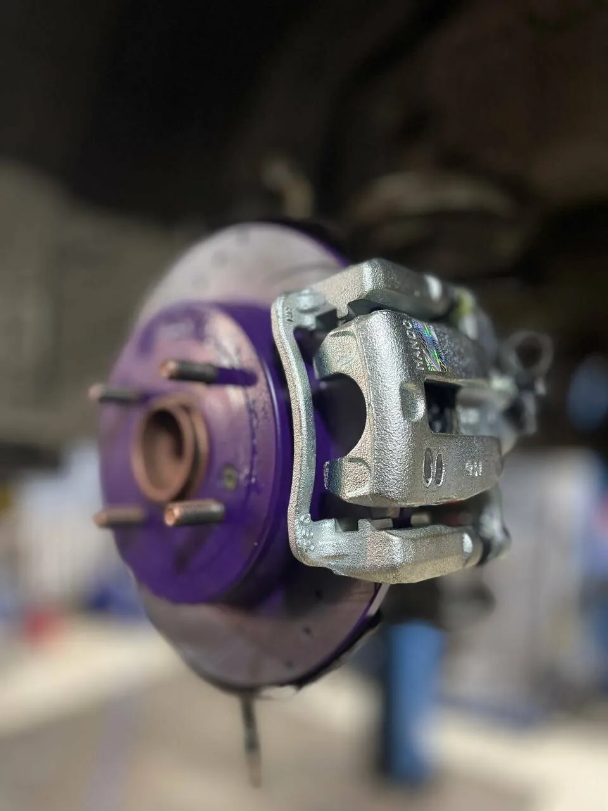
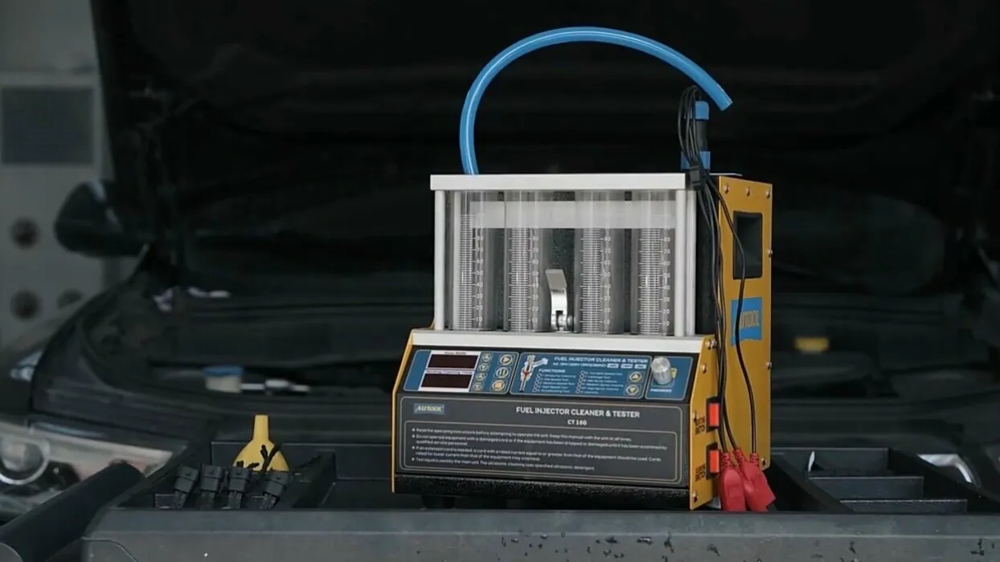
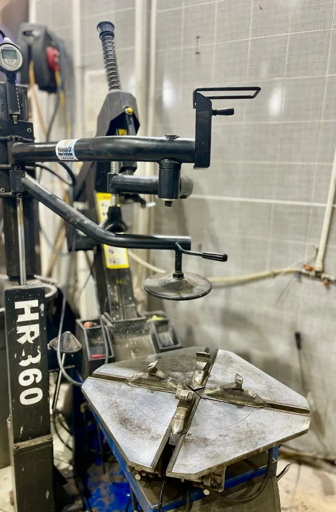
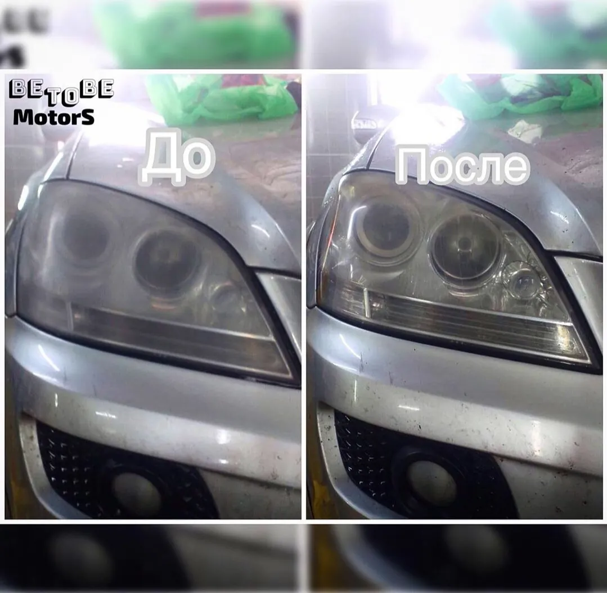
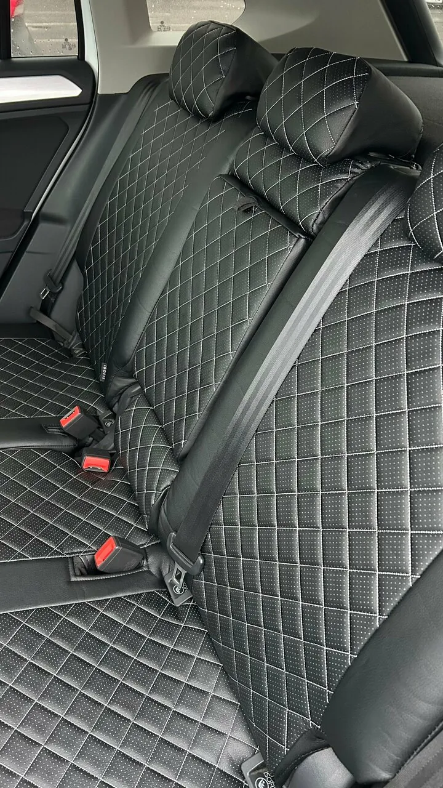
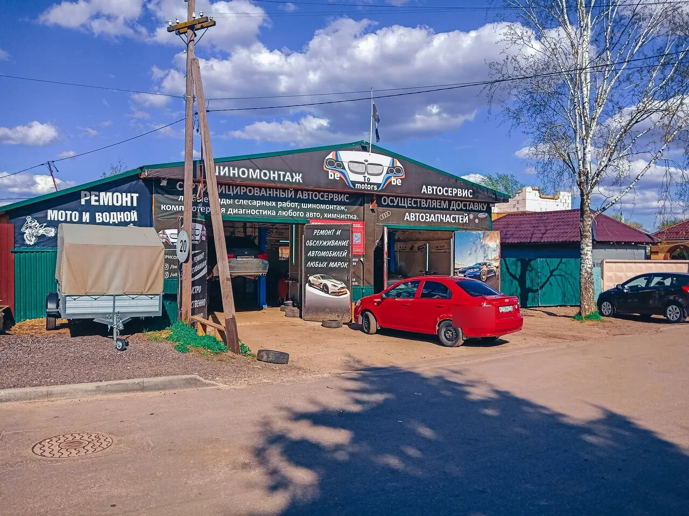

«Есть место ожидание для клиента, что самое главное, со всеми удобствами.»
Анатолий К.зона ожидания
Ждать машину здесь – не наказание
Не нужно стоять в цеху или сидеть в машине на парковке. Об этой комнате клиенты пишут чаще, чем о чём-то ещё.


«Есть место где скоротать ожидание, с чаем и конфетками)»
Владислав С.«С управляющим там милое дело поболтать за чашечкой вкусного кофе ( которое кстати там тоже наливают😁) пока чинят ваших мустангов!»
Отзыв на Яндекс Картах
- Wi-Fi
- Туалет
- Парковка
- Оплата картой и по СБП
- Подарочный сертификат
если вы проездом
Сломались по пути через Коломну?
Сюда приезжают из Москвы и заезжают те, кого поломка застала в дороге.
«Нашли причину поломки авто за 5 минут! Починили в тот же день, за пару часов. Сами были проездом из Москвы.»
Александра Родионова«В Москве не могли найти причину поломки,обратились по рекомендации друга в данный сервис и примчали из Москвы 😁»
Анна Бем«приехали в гости и пробили колесо, случайно попали в этот сервис и ни разу не пожалели!»
Мария З.«Прокололи колесо, ребята оперативно выехали к нам.»
Дарья К.
услуги
Что делаем
Легковые машины, мотоциклы на шиномонтаже, Газели и другая лёгкая коммерческая техника.
Диагностика
«мастер показал где находится датчик( и что я сам в силах заменить его)»
Антон Радаев, Hyundai Accent

Раскоксовка
«Делал раскоксовку Octavia 1.8 tsi был масложер. Сделали оперативно, попутно устранили обнаруженные течи.»
Илья Степанов
Газели и редукторы
«Умеют перебирать редуктора, единственные в Коломне.»
Николай Кулемин

как работаем
Показывают, что сделали, и помнят вашу машину
Показывают работу
«при мне все сделали все показали, чек приложили, еще и посоветовали что поменять не накручивая свои работы»
Максим ЦеллерВедут историю машины
«На каждого клиента ведётся история обслуживания автомобиля!»
Александр ШевченкоСкидки постоянным
«постоянным клиентам скидки.»
Анна З.Запчасти на месте
«И сразу можно заказать запчасти»
Анатолий К.цены
Сколько стоит
Цены из карточки сервиса на Яндекс Картах. Они могли измениться – уточните по телефону перед визитом.
Диагностика и ремонт
- Диагностика ходовой500 ₽
- Компьютерная диагностика1000 ₽
- Диагностика BMW1500 ₽
- Замена масла1000 ₽
- Замена колодок1000 ₽
- Дезинфекция кондиционера1000 ₽
- Сварка: глушители, гофры, катализаторы1500 ₽
- Заказ запчастей1000 ₽
Колёса и салон
- Шиномонтаж, по радиусу1500–4400 ₽
- Ремонт прокола жгутом400 ₽
- Ремонт прокола грибком700–1200 ₽
- Датчик давления50 ₽
- Хранение шин, сезон3000 ₽
- Химчистка салонаот 500 ₽
Гарантия на работы: {{условия гарантии}}
отзывы
Что говорят о нас наши клиенты
4,9135 оценок и 82 отзыва на Яндекс Картах · «Хорошее место 2026»
Замечательный автосервис👍 от обслуживания до личного отношения к каждому клиенту ! В Москве не могли найти причину поломки,обратились по рекомендации друга в данный сервис и примчали из Москвы 😁 Сделали диагностику и нашли причину поломки,и сразу же показали и объяснили в чем проблема, запчасти привезли прям при нас ,очень быстро ..это очень обрадовало потому что мы «не местные» Советую данный автосервис. Ставлю 5 звезд,ОГРОМНОЕ СПАСИБО всем мастерам. Наша 🚙 ласточка довольна и конечно МЫ!!!
Привёз свой Акцент на компьютерную диагностику, пока мастер подключал оборудование он уже примерно определил проблему, что и подтвердила диагностика ! Профи 100%. До этого момента мой авто был в двух автосервисах Красногорска, диагностика показала ,, НИЧЕГО СТРАШНОГО,, чек пропадет, если нет, сбрасывайте через аккумулятор, печально, и деньги на ветер! А тут же 1е- результат, точная диагностика 2е- мастер показал где находится датчик( и что я сам в силах заменить его) это легко. 3е- я в шоке от цены, копейки, серьёзно! Однозначно рекомендую! Человек знает своё дело и выполняет его на 5+ Спасибо!
"Скорая профессиональная помощь"- это Автосервис #betobemoters г.Коломна. Наше знакомство началось с неприятности. В дороге у меня спустили колесо. Мне посоветовали этот Автосервис мои друзья, которые неоднократно обращались туда. Я подъехала, объяснила ситуацию и без лишних вопросов мне оказали немедленную помощь в 8 часов вечера в воскресенье!!! Сотрудники -очень приятные молодые люди, профессионалы своего дела. Теперь я ремонтирую свой автомобиль BMW только в этом Автосервисе.
Большой перечень услуг, ребята работают на совесть, приятные цены, а постоянным клиентам скидки. Можно расплатиться картой. Пока ожидаешь машину, угостят чаем или кофе. Можно скоротать время за журналом или беседуя с хозяином.
Тут работают профессионалы своего дела!!! Нашли причину поломки авто за 5 минут! Починили в тот же день, за пару часов. Сами были проездом из Москвы. Повезло, что попали именно в эту мастерскую. Всем советую!!! Жаль, что ребята находятся в Коломне, а не Москве! Буду ездить к ним на ТО))
Менял всю подвеску на BMW X5 E70, всё сделали качественно. Я очень благодарен и рад . За одно, как раз подошло время смены резины и её тоже поменял.
Делал раскоксовку Octavia 1.8 tsi был масложер. Сделали оперативно, попутно устранили обнаруженные течи. Масложер пропал, машинка работает как новая. Рекомендую 👍
Не особо дорого, цени не заламывают Мастера шарят, при мне все сделали все показали, чек приложили, еще и посоветовали что поменять не накручивая свои работы По мне так хорошо, советую приехать
Пользуюсь услугами данного сервиса более 3-х лет. Работают квалифицированные специалисты, новое и технологичное оборудование, демократичные цены. На каждого клиента ведётся история обслуживания автомобиля!
Приезжаю к ребятам данного автосервиса уже 2й год и ни разу не пожалела. Всегда подскажут оптимальный вариант. Отношение к клиентам и к работе на высочайшем уровне. Мастера своего дела и уважение к профессии явно на 5+ С управляющим там милое дело поболтать за чашечкой вкусного кофе ( которое кстати там тоже наливают😁) пока чинят ваших мустангов! Советую сервис👍
красавцы. Залили в Рендж Ровер полный бак то ли дизель плохой то ли 95 бензин. и машина перестала ехать нормально. Приехал к ним сделали всё красиво. Слили бенз, почистили топливную систему. И вот оно он опять едит хорошо.
Отличная детейлинг студия , ребята профессионалы знающие и любящие свое дело. Отдала машину для замены чехлов и химчистку. Все сделали идеально.
контакты
Ищите вывески «Шиномонтаж» и «Автосервис» на Заставной
+7 (905) 787-57-07- ЧасыПн–Пт 9:00–18:00, Сб–Вс 10:00–18:00
- АдресКоломна, Заставная ул., 26. Остановка «Городищи-2» – 264 м. Есть парковка.
- Написать

Открыть на Яндекс КартахМаршрут до сервиса